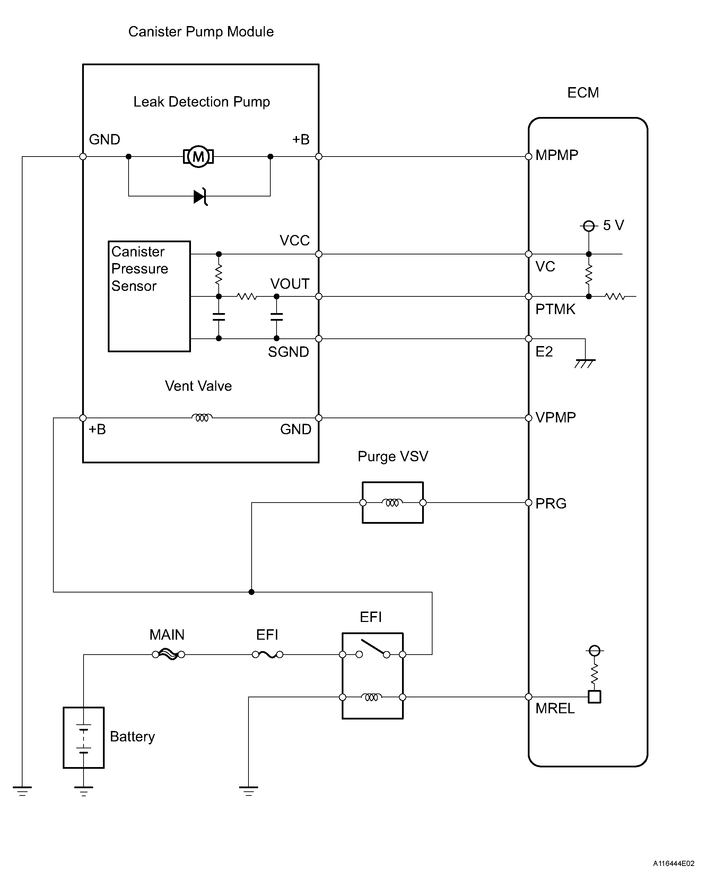

DTC P0450 Evaporative Emission Control System Pressure Sensor Malfunction; DTC P0451 Evaporative Emission Control System Pressure Sensor Range / Performance; DTC P0452 Evaporative Emission Control System Pressure Sensor / Switch Low Input; DTC P0453 Evaporative Emission Control System Pressure Sensor / Switch High Input: Wiring Diagram

Courtesy of © TOYOTA, LICENSE AGREEMENT TMS1002